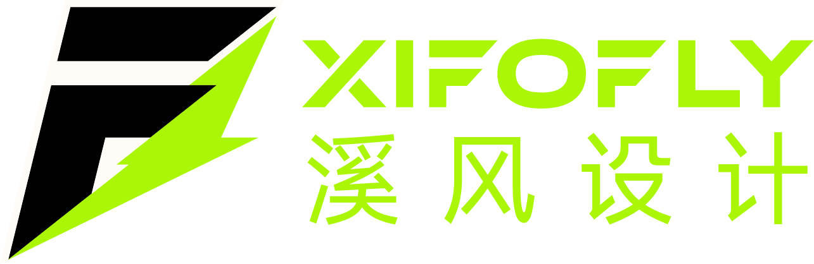

<!DOCTYPE html>
<html lang="zh-CN">
<head>
<meta charset="utf-8"/>
<meta content="width=device-width, initial-scale=1.0" name="viewport"/>
<title>页脚收官屏预览 | XIFOFLY</title>
<link href="vendor/fontawesome/css/all.min.css" rel="stylesheet"/>
<link href="styles.css" rel="stylesheet"/>
<style>
/* ===== 预览专用：页脚收官屏（拟写入 styles.css 的 .footer-screen） ===== */
.footer-screen {
    min-height: 100vh;
    display: flex;
    flex-direction: column;
    justify-content: center;
    background:
        radial-gradient(circle at 50% 30%, var(--secondary-10) 0%, transparent 55%),
        linear-gradient(180deg, var(--primary) 0%, #0D0F0C 100%);
    border-top: 1px solid var(--card-border);
    position: relative;
    overflow: hidden;
}
.footer-screen::before {
    content: '';
    position: absolute;
    inset: 0;
    background:
        radial-gradient(circle at 20% 20%, rgba(200,255,62,0.04) 0%, transparent 40%),
        radial-gradient(circle at 80% 80%, rgba(212,166,86,0.04) 0%, transparent 40%);
    pointer-events: none;
}

.fs-cta {
    text-align: center;
    padding: 3.8rem 1.5rem 2.6rem;
    position: relative;
    z-index: 1;
}
.fs-cta .fs-eyebrow {
    display: inline-flex;
    align-items: center;
    gap: 0.6rem;
    font-size: 0.8rem;
    letter-spacing: 3px;
    text-transform: uppercase;
    color: var(--secondary);
    margin-bottom: 1.1rem;
}
.fs-cta .fs-eyebrow::before,
.fs-cta .fs-eyebrow::after {
    content: '';
    width: 2.5rem;
    height: 1px;
    background: linear-gradient(90deg, transparent, var(--secondary-50));
}
.fs-cta .fs-eyebrow::after {
    background: linear-gradient(90deg, var(--secondary-50), transparent);
}
.fs-cta h2 {
    font-size: clamp(2.3rem, 5.5vw, 3.4rem);
    font-weight: 800;
    letter-spacing: -1px;
    margin-bottom: 0.8rem;
    line-height: 1.2;
}
.fs-cta h2 .hl {
    background: linear-gradient(135deg, var(--secondary-light-grad), var(--secondary-dark-grad));
    -webkit-background-clip: text;
    background-clip: text;
    -webkit-text-fill-color: transparent;
}
.fs-cta p {
    color: var(--text-secondary);
    font-size: 1rem;
    max-width: 480px;
    margin: 0 auto 2rem;
}
.fs-cta .btn-lg {
    padding: 1rem 2.8rem;
    font-size: 1rem;
}

.fs-divider {
    width: min(720px, 80%);
    height: 1px;
    margin: 0 auto;
    background: linear-gradient(90deg, transparent, var(--card-border), transparent);
}

.fs-info {
    padding: 2.8rem 2rem 2rem;
    position: relative;
    z-index: 1;
}
.fs-info .footer-grid {
    grid-template-columns: 2fr 1fr 1.2fr 1fr 1fr;
    max-width: 1100px;
    margin-left: auto;
    margin-right: auto;
    gap: 1.5rem;
    margin-bottom: 2.2rem;
}
.fs-info .footer-bottom {
    max-width: 1100px;
    margin: 0 auto;
    padding-top: 1.5rem;
}

@media (max-width: 768px) {
    .footer-screen {
        min-height: auto;
    }
    .fs-cta {
        padding: 3.5rem 1.25rem 2.5rem;
    }
    .fs-cta h2 {
        font-size: 2.2rem;
    }
    .fs-info {
        padding: 2.5rem 1.25rem 1.5rem;
    }
}
</style>
</head>
<body>

<footer class="footer-screen">
    <!-- 上半：行动号召 -->
    <div class="fs-cta" data-animate>
        <span class="fs-eyebrow">Let's Talk</span>
        <h2>有设计需求？<br>让品牌<span class="hl">轻盈自有回响</span></h2>
        <p>无论是品牌重塑还是全新项目，我们都能为你提供专业的设计方案</p>
        <a href="contact.html" class="btn btn-primary btn-lg">
            <span>开始合作</span>
            <i class="fas fa-arrow-right"></i>
        </a>
    </div>

    <div class="fs-divider"></div>

    <!-- 下半：联系信息 -->
    <div class="fs-info">
        <div class="footer-grid">
            <div class="footer-brand">
                <a href="index.html" class="footer-brand-link">
                    
                </a>
                <h3>溪风</h3>
                <p>轻盈自有回响</p>
                <p>品牌视觉与数字设计创意工作室</p>
            </div>
            <div class="footer-links">
                <h4>快速链接</h4>
                <ul>
                    <li><a href="index.html">首页</a></li>
                    <li><a href="cases.html">案例</a></li>
                    <li><a href="blog.html">博客</a></li>
                    <li><a href="about.html">关于</a></li>
                    <li><a href="contact.html">联系</a></li>
                </ul>
            </div>
            <div class="footer-contact">
                <h4>联系方式</h4>
                <ul>
                    <li><i class="fas fa-envelope"></i> <span>xifofly@163.com</span></li>
                    <li><i class="fab fa-weixin"></i> <span>xifofly</span></li>
                </ul>
            </div>
            <div class="footer-qrcode">
                <h4>微信公众号</h4>
                
                <p>扫码关注</p>
            </div>
            <div class="footer-qrcode">
                <h4>企业微信</h4>
                
                <p>扫码联系</p>
            </div>
        </div>
        <div class="footer-bottom">
            <p>© 2026 溪风 (XIFOFLY). All rights reserved.</p>
        </div>
    </div>
</footer>

</body>
</html>
